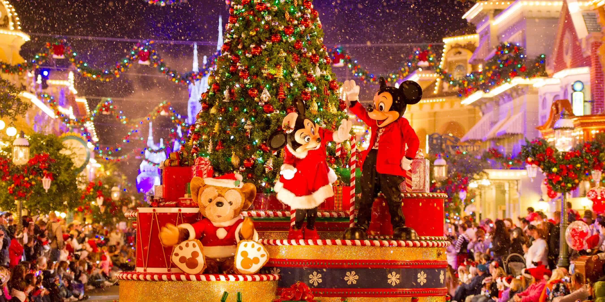

Большинство русских и белорусов празднуют Новый год со своими семьями и близкими друзьями. Этот праздник в России происходит от Рождества. Рождество было также крупным праздником в России, пока его и другие христианские праздники не запретили коммунисты. Чтобы компенсировать отсутствие Рождества, новогодний праздник отмечался так же, как Рождество, но без религиозного аспекта. Много рождественских атрибутов было перенесено из первоначального праздника, например, рождественская ёлка, которая стала новогодней ёлкой. Даже после падения Советского Союза Новый год всё ещё отмечается в России и стал русской традицией. Существует старое суеверие, что если первый посетитель (особенно неожиданный) 1 января является мужчиной, год будет хорошим. Люди также пытаются начать новый год без долгов.
Празднование обычно начинается примерно за 1—2 часа до полуночи. Общей традицией является «прощаться со старым годом», вспоминая самые важные события последних двенадцати месяцев. За пять минут до полуночи большинство людей смотрят новогоднюю речь президента по телевизору и популярные фильмы, праздничные концерты или телешоу до и после полуночи. Есть традиция слушать Кремлёвские куранты, звонящие двенадцать раз по радио или по телевизору, за которым следует государственный гимн. Во время боя курантов люди загадывают своё желание и затем пьют бокал шампанского. Некоторые, чтобы желание точно сбылось, пытаются успеть сжечь свои записанные на бумаге тайные пожелания на следующий год и успеть выпить пепел в бокале шампанского. После боя курантов люди дарят друг другу подарки, богато ужинают, смотрят телевизионные концерты и развлекаются. Наиболее популярными блюдами на новогоднем столе являются салаты «Оливье», «Сельдь под шубой» и «Крабовый», бутерброды с красной икрой, холодец. Некоторые люди зажигают фейерверки на улице и навещают своих друзей и соседей. В последние дни года многие люди празднуют со своими коллегами по работе (так называемые «корпоративы»). Как правило, они проходят в ресторанах или ночных клубах, но иногда и прямо на рабочем месте. В детских садах и младших классах школ в последние дни года проходят новогодние утренники, на которые вместе с детьми приходят их родители и иногда другие родственники (бабушки, дедушки, братья, сёстры). На утренниках дети поют новогодние песни, показывают различные номера, водят хороводы вокруг новогодней ёлки. В конце приходят Дед Мороз со своей внучкой Снегурочкой и дарят детям подарки. 31 декабря в основном проводится дома или с друзьями.
Больше всего Новый год в Америке ассоциируется с шаром времени на Таймс-сквер. Кристальный шар размерами 5386 кг и 3,7 м, расположенный на крыше Times Square, поднимается до крыши здания в течение последней минуты уходящего года, чтобы сигнализировать о начале Нового года. Мероприятие проводится с 1907 года, и в среднем его посещает 90 000 человек ежегодно.
Гай Ломбардо и его группа The Royal Canadians представили ежегодный новогодний вечер (до 1977 г.), транслируемый из бального зала отеля Уолдорф-Астория. Телеведущий Дик Кларк уже на протяжении 33 лет проводил последние минуты уходящего года в прямом эфире на Таймс-сквер. После перенесенного инсульта в декабре 2004 года Кларк ушёл в отставку, в 2006 году его сменил Райан Сикрест. Кларк продолжал сниматься в специальных выпусках до своей смерти в 2012 году.
Другие торжества проходят на Лас-Вегас-Стрип, где улицы закрыты для движения автотранспорта перед вечером Нового года, и в полночь проходит фейерверк.
Наряду с торжествами на Таймс-сквер, в Центральном парке Нью-Йорка проходит мероприятие «Midnight Run», организованное New York Road Runners, которое завершается фейерверком и гонкой вокруг парка, которая начинается в полночь.
Тематические парки Диснея в штате Флорида и Диснейленд в Анахайме, Калифорния традиционно являются самыми загруженными в дни до и в канун Нового года.
 1 страница 3 страница Источник